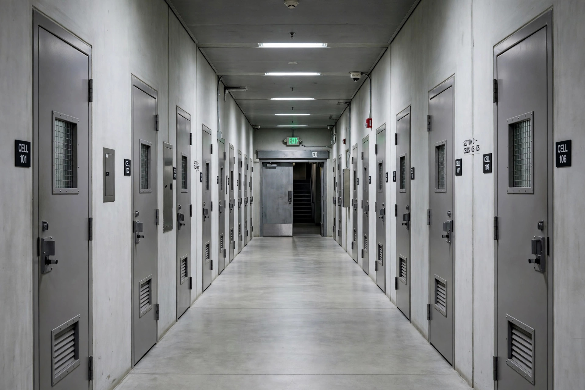

From Wikipedia, the free encyclopedia

A prison corridor: the Optional Protocol establishes a system of regular visits to places of detention to prevent torture before it occurs.The Optional Protocol to the Convention against Torture and Other Cruel, Inhuman or Degrading Treatment or Punishment (OPCAT) is an international treaty, adopted by the United Nations General Assembly in 2002 and in force since 2006, which establishes a system of regular visits to places where persons are deprived of their liberty, in order to prevent torture and other cruel, inhuman or degrading treatment or punishment. Its philosophy is preventive rather than reactive: instead of investigating violations after the fact, it opens detention to ongoing scrutiny.
OPCAT rests on two complementary pillars. Internationally, it creates the Subcommittee on Prevention of Torture (SPT), a UN treaty body of 25 independent experts empowered to visit any place of detention in states parties — prisons, police stations, psychiatric institutions, immigration detention centres, and military facilities — to interview detainees in private, and to make recommendations. Domestically, each state party must designate or establish one or more National Preventive Mechanisms (NPMs): independent bodies — often ombudsman institutions or inspectorates — with guaranteed access to all places of detention within the country, which conduct their own visiting programmes and report publicly.
The idea of preventive visits derives from the work of the International Committee of the Red Cross in visiting prisoners of war, and from a proposal by the Swiss jurist Jean-Jacques Gautier that led to the European Convention for the Prevention of Torture (1987) and its Committee (CPT). A draft optional protocol championed by Costa Rica was debated from the early 1990s; OPCAT extends the model worldwide. More than ninety states have become parties.